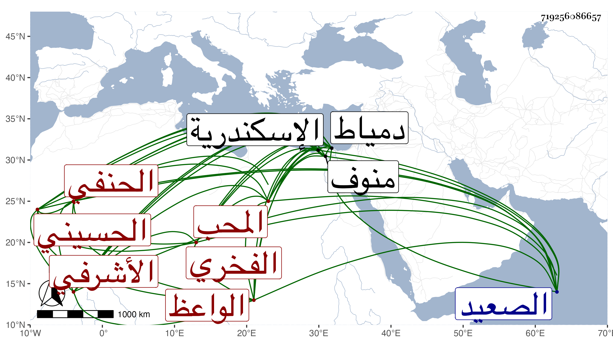

0902Sakhawi.DawLamic.ITO20230111-ara1.EIS1600.719256086657
Biography ID: 719256086657
591
محمد بن دمرداش المحب الأشرفي الفخري والده الحسيني سكنا الواعظ الحنفي سبط الشمس الأشبولي البنهاوي أحد من أخذنا عنه . ولد في سنة ست وثلاثين وثمانمائة تقريبا ونشأ فلازم العز عبد السلام البغدادي في الفقه وأصوله والعربية وغيرها بحيث انتفع به ، ومما قرأه عليه الآثار لمحمد بن الحسن وأخذ العربية فقط عن الأبدي وقرأ نحو نصف المتوسط وقطعة من المسيلي على القرافي وبعض شرح قواعد ابن هشام على مؤلفه الكافياجي والعربية والصرف عن الشهاب بن عبادة وشرح التصريف لسعد الدين وقطعة من كل من القطب وشرح آداب البحث على العلاء الكيلاني ولازمه في غير ذلك وكذا أخذ عن ناصر الدين بن قرقماس وأبي السعادات بن البلقيني وطائفة ولازم الزين جعفر السنهوري في ابتدائه في القراءات وسمع عليه بعض الشاطبية وغيرها وسمع أيضا على جده لأمه وابن الخلال والعلم البلقيني والسيد النسابة وسعد الدين بن الديري وآخرين وبعض ذلك بقراءته ، وبرع في فنون وأذن له العزفي الإفادة وولي عقود الأنكحة عن قضاة مذهبه بل ناب في القضاء عن شيخه ابن الديري وأذن العلم البلقيني لقاضي دمياط في استنابته فيها وكذا ناب بمنفلوط وغيرها . واقتصر بأخرة على العقود والتكسب بالشهادة وتشاغل بالوعظ وحصل من ذلك فوائد نفيسة استمد أكثرها مني وجمع من المجاميع بخطه الكثير وكتب من تصانيفي جملة كالقول البديع وختم البخاري ومسلم وقص الظفر ومسئلة الخاتم والحبر السمين وقرأ كل ذلك مع غيره مما التقطه علي ولازم كتابة الإملاء مع الجماعة . وكان مع فهمه المتوسط في الحفظ بمكان بحيث يبهر سامعه كائنا من كان ولذا رغب الدوادار الكبير في جعله خطيب الجامع المجاور للقبة التي أنشأها بنواحي المطرية مع إمامته وأحسن إليه وأقام هناك مدة بل كان السلطان حين يكون هناك يقبل عليه ويصلي خلفه في الجمع وغيرها ويستظرفه وبعد موت الدوادار أعرض عن ذلك لسلس اعتراه وأنعم عليه السلطان حينئذ بستين دينارا ولما نصل استقربه الزين ابن مزهر في الميعاد بمدرسته التي أنشأها بجامع بيته وكان يحضر هو وجماعة عنده ويقضون العجب من حفظه وطلاقته ، وكذا عقد الميعاد بالأزهر وحضره الأكابر كاللقاني قاضي المالكية وبجامع الظاهر وغيرهما لا سيما في الأشهر الثلاثة . وسافر إلى الصعيد واسكندرية ومنوف والغربية والخانكاه وغيرها وعقد في كل منها مجلس الوعظ وأقر له كل من سمعه من الفضلاء والأعيان فضلا عمن دونهم بالانفراد ، هذا مع إتقانه فيما يبديه وتحريه ولكنه كثير الامتهان لنفسه غير متصون ولا حلو اللسان بل كان متخيلا بذيئا وقد امتحن غير مرة ولم ينفك عن تجاهره وطريقته حتى عدي عليه ليلا وهو نائم في بيته من درب طاز ليلة الثلاثاء ثالث عشر شعبان سنة ثمان وثمانين فخنق ولم يدر فاعل ذلك ، وصلى عليه من الغد بمصلى باب النصر ثم دفن عند أبيه بجوار التربة السعيدية ، وأرجو أن يكون كفر عنه بذلك سيما وهو كان كثير البكاء والاعتراف بالتقصير والخوف بل سمعت أنه تاب قبل وأناب ورؤيت له بعد موته منامات صالحة ، وأظنه قارب الستين عفا الله عنه ورحمه .
